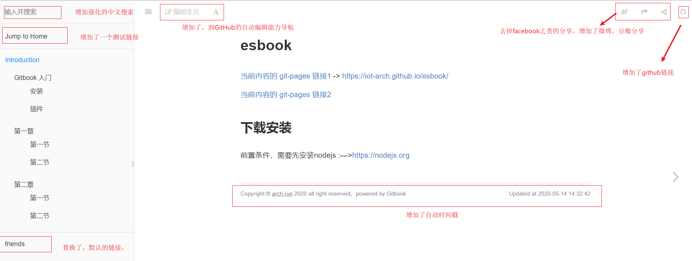

esbook
当前内容的 git-pages 链接 -> https://iot-arch.github.io/esbook/
目录
使用gitbook
前置条件，需要先安装nodejs :--->https://nodejs.org
Help CMD list for make
make - Build the book
make build - Build the book
make serve - Serving the book on localhost:4000
make install - Install gitbook and plugins
make epub - Build epub book
make pdf - Build pdf book
make mobi - Build mobi book
make clean - Remove generated files
脚本工具
demo 说明
除了图示的说明外，目录与内容的分隔栏还可以自由拖动,中间能看到3个点.

单击可以看大图